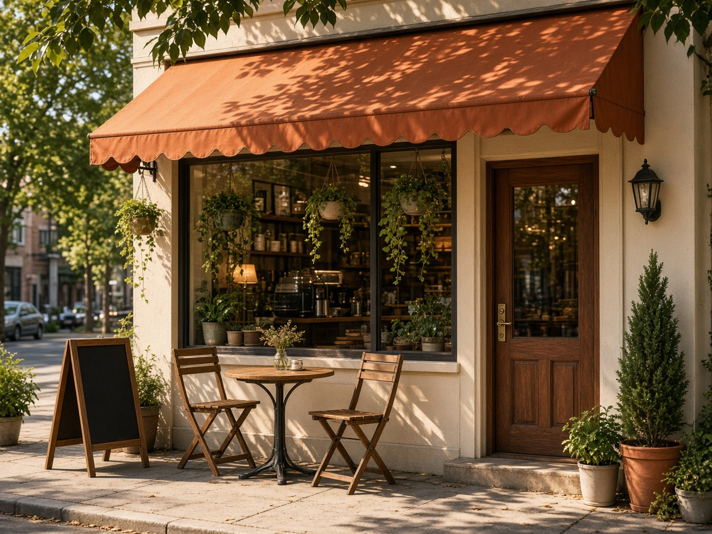

Sourced honestly
Direct-trade beans, named farms, and a roast date printed on every bag we sell.
Our story
Marigold & Bean started in 2019 as a single espresso cart at the Sunday farmers' market. Three years and a lot of regulars later, we found a corner shop on Lake City with good morning light and never left.
We roast in small batches with two local farms we've worked with since year one, and we bake everything — bread, pastries, the lot — on-site before sunrise. Nothing is trucked in frozen; if we can't make it fresh that morning, it isn't on the menu that day.
The room is built for staying a while: big windows, real mugs, and a "no rush" house rule. Half our regulars come for the coffee. The other half come for the table next to them.

Direct-trade beans, named farms, and a roast date printed on every bag we sell.
Our kitchen opens at 4 AM. Whatever's left at close doesn't reappear tomorrow.
Free wifi, plenty of outlets, and no time limit on a window seat.
| Day | Counter | Kitchen closes |
|---|---|---|
| Mon – Fri | 7:00 AM – 6:00 PM | 5:15 PM |
| Saturday | 7:30 AM – 6:00 PM | 5:15 PM |
| Sunday | 8:00 AM – 4:00 PM | 3:15 PM |
We don't — it's first-come, first-served. Window seats go fastest, so early mornings or after 2 PM are your best bet on weekends.
Street parking on Lake City is metered until 6 PM. There's also a small public lot two doors down behind the pharmacy.
Absolutely — that's half the reason people come. We only ask that during the Saturday morning rush (9–11 AM) you keep table time to about 90 minutes if there's a line.
Yes — oat, almond, and whole milk are all no extra charge. We also keep a small selection of gluten-free pastries baked fresh on Thursdays and weekends.